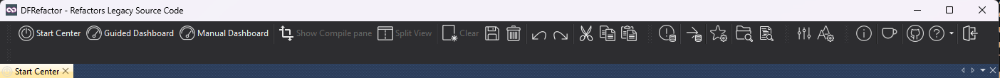

Toolbars
One toolbar runs across the top of the window, in four groups: where to go, the editor, the tools, and help. Hover any button for its description.

Where to go
|
Button |
What it does |
|
Start Center |
Open a workspace, or pick the guided or manual lane. |
|
Guided Dashboard |
The guided flow, one step at a time. |
|
Manual Dashboard |
Pick folders and functions yourself. |
|
Show Compile pane |
Show or hide the compile pane — Test Compile, Compiler Output and the Modernization Analyzer. |
|
Split View |
Split or un-split the view, to see two things at once. |
|
Clear |
Close the current workspace or file. |
The editor
These act on the source file open in the editor, and are the ordinary editing commands: Save (Alt+S), Undo, Redo, and cut / copy / paste. They are enabled only when the editor has something to act on.
Tools
|
Button |
What it does |
|
View Refactor Engine Error Log |
The engine's error log. Enabled only when there are errors to look at. |
|
Export Dialog |
Export the current configuration to an ini-file for unattended runs — see Command-Line Usage. |
|
Analyze Source Rules |
Choose which obsolete symbols Analyze Source searches for. |
|
Containing Folder |
Open the current file's folder in Explorer. |
|
StarZen's Source Explorer (Alt+E) |
Launch StarZen's DataFlex Source Explorer. A separate download; give DFRefactor its path in Program Settings first. |
|
Settings (Alt+T) |
Program Settings — backups, external tools, theme, engine behaviour. |
|
Editor Settings (Alt+D) |
Editor Settings — the Scintilla editor's colours, font, keywords and indent size. |
Help and support
|
Button |
What it does |
|
Ko-fi |
Buy me a coffee, to support the project. |
|
GitHub |
Suggest a feature or report a bug on DFRefactor's GitHub page. |
|
Help (F1) |
This help. Offers Local HTML Help, Online HTML Help — which may be more current than the copy installed with the program — and a link to the GitHub source code repository. |
|
Exit (Alt+F4) |
Close the program. |
Note that Undo Refactoring is not here. Reverting a run is a dashboard action — Revert — because it works on the backup folder rather than on the editor; see How to use the Program.